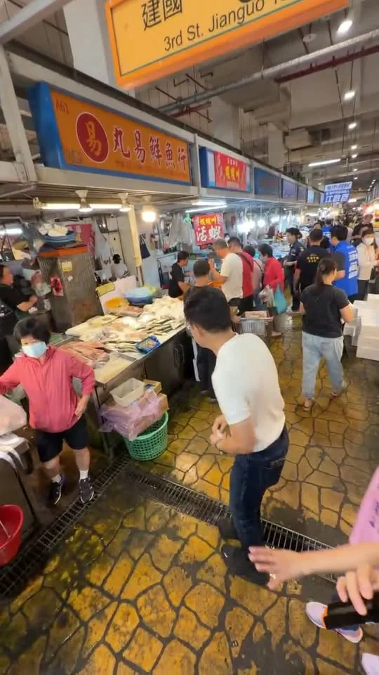

MAYOR2026.OBSERVE.TW
整理臺北、新北、桃園、臺中、臺南、高雄市長候選人的官方公開發文，跨平台合併時間軸與議題比例。
Six Municipalities
最後更新 2026-09-25 12:00
Latest

蔡英文為何「怕接何欣純電話」？ 何欣純 重要的事我就是會一直追！

Talking About Taiwan: A Wide-Ranging Conversation with Xie Long-jie
中秋佳節愉快、月圓人團圓！ 🌕 中秋烤肉解膩神隊友！ 大梨山水梨、高山茶最對味 中秋連假少不了月餅、烤肉，啟臣私房推薦最強解膩神隊友——咱大梨山和山城的水梨和梨山高山茶！一口爆汁清脆、一口回甘降火，爽口解膩又健康，絕對百搭！ 祝大家吃得開心、中秋節快樂！🥮🍵 #中秋節快樂 #大梨山 #梨山高山茶 #臺中味 #臺中Way #Taichungway


中秋團圓，佳節愉快。 有一群人，在大家團圓的時候，在崗位上守著大家，一個「圓」字少了一角。 也有很多人還在團圓路上，無法準時抵達。 我提「30 分鐘核心生活圈」，講的就是這件事。 捷運、輕軌，雙北一起規劃，把跨市這段路接順。 交通圓滿了，大家就能早一點下班、早一點回家吃飯。 回家路完整了，就不用等中秋。 祝大家中秋愉快。月餅跟家人分著吃、柚子不要忘，烤肉也要注意安全喔。

@hsiehlungchieh:中秋月圓，人團圓🌕 今晚別忘了和家人坐伙食柚子、呷月餅，泡一壺茶，講講這一年來的大小代誌。 龍介祝大家中秋佳節闔家平安，萬事如意！


中秋月圓，人團圓🌕 今晚別忘了和家人坐伙食柚子、呷月餅，泡一壺茶，講講這一年來的大小代誌。 龍介祝大家中秋佳節闔家平安，萬事如意！

#中秋節 不但要吃柚子，今天巧慧直接帶大家到 #八里 摘爆肥美柚子🤩 中秋節前夕，我特別來到八里感受休閒農場的樂趣，從摘柚子、手作DIY，到品嘗在地文旦柚風味餐，每個環節都充滿樂趣，雖然我好像只一直顧著吃柚子…🤣 我一直都覺得，新北真的有很多好玩的地方，這裡的山水特色比其他地方更豐富，所以我不但提出「新皇冠海岸計畫」還有「鑽石山城」的觀光政見，我也認為，新北有最好的潛力發展休閒農業！ 未來，我一定會投注資源，推動 #休閒農場再升級，輔導傳統農牧場轉型成為具備食農教育、生態導覽功能的休閒體驗農園，進一步讓「體驗經濟」成為新北的經濟新動力！ 也祝大家 #中秋節快樂！

月圓，是團聚的時刻；團圓，有很多不同的模樣。 ⠀ 有人與家人圍坐吃飯，有人和朋友相聚，有人仍堅守工作崗位，也有人選擇安靜地度過今晚。 ⠀ 無論怎麼過，我都想把台北打造成一座接住每個人的城市，讓每個人都有自己的歸屬。 ⠀ 歡迎大家留言告訴我，今年中秋，你最希望實現的願望是什麼？ 願今晚的月光，照亮你回家的路，也陪伴你未完成的夢想。 ⠀ 祝大家中秋節快樂，平安順心 🌕

杰伴烤肉、杰伴賞月🌕世杰祝福大家中秋節快樂，月圓人團圓💖 這段時間，我持續跑遍桃園各地的中秋活動，和市民朋友見面問候，親自傳達我最真摯的祝福。 在這個團圓的日子裡，祝大家幸福圓滿、闔家平安！

大家早安！啟臣在東區建國市場 feat. 羅廷瑋委員、李中議員、林霈涵議員

@hsiehlungchieh:月圓人團圓！龍介祝大家中秋節快樂

@prof.kochihen:中秋連假第一天，到市場祝福鄉親佳節愉快！ 一早來到三民區 #建興市場，向攤商朋友和採買的鄉親問候，也祝福大家中秋節快樂、闔家平安！ 一路走進市場，收到許多鄉親為我熱情加油。謝謝大家給我的鼓勵，每一份心意，我都會牢記在心。 更有攤商送上象徵「旺來」的鳳梨、代表「凍蒜」的蒜苗，還有菜頭，祝福我們「好彩頭」！ 謝謝建興市場的鄉親，也祝福所有高雄市民朋友：月圓人團圓、事事都圓滿；攤商朋友生意興隆、大家平安健康。
中秋佳節愉快、月圓人團圓！ 🌕 中秋烤肉解膩神隊友！ 大梨山水梨、高山茶最對味 中秋連假少不了月餅、烤肉，啟臣私房推薦最強解膩神隊友——咱大梨山和山城的水梨和梨山高山茶！一口爆汁清脆、一口回甘降火，爽口解膩又健康，絕對百搭！ 祝大家吃得開心、中秋節快樂！🥮🍵 #中秋節快樂 #大梨山 #梨山高山茶 #臺中味 #臺中Way #Taichungway


早安！☀️ 連假第一天從 ＃二苓市場 出發！祝大家中秋佳節愉快！ 鄭光峰 高雄市議員 黃敬雅 Huang Ching-Ya 吳昱鋒-科技先鋒 陳致中 Chih-Chung Chen

中秋月圓，人團圓🌕 今晚別忘了和家人坐伙食柚子、呷月餅，泡一壺茶，講講這一年來的大小代誌。 龍介祝大家中秋佳節闔家平安，萬事如意！

@su.chiaohui:中秋節不但要吃柚子，今天巧慧直接帶大家到八里摘爆肥美柚子🤩 中秋節前夕，我特別來到八里感受休閒農場的樂趣，從摘柚子、手作DIY，到品嘗在地文旦柚風味餐，每個環節都充滿樂趣，雖然我好像只一直顧著吃柚子…🤣 我一直都覺得，新北真的有很多好玩的地方，這裡的山水特色比其他地方更豐富，所以我不但提出「新皇冠海岸計畫」還有「鑽石山城」的觀光政見，我也認為，新北有最好的潛力發展休閒農業！ 未來，我一定會投注資源，推動休閒農場再升級，輔導傳統農牧場轉型成為具備食農教育、生態導覽功能的休閒體驗農園，進一步讓「體驗經濟」成為新北的經濟新動力！ 也祝大家中秋節快樂！

月圓人團圓，中秋節是最適合和家人、朋友相聚的日子。 節慶期間，城市的運作不會停下腳步。謝謝持續堅守崗位的警消、醫護、交通、清潔，以及所有第一線夥伴，守護城市安全，讓市民朋友安心過節。 也歡迎大家趁著佳節，走進臺北的大街小巷，感受節慶氣氛。 祝福大家中秋愉快、闔家平安！🌕

何欣純是漲停板指標? !


親愛的鄉親與好朋友們，大家中秋節快樂。 今天是中秋佳節，相信許多人都已經回到家中，準備好和家人一起享用烤肉月餅與柚子了。 在這個美好的日子裡，最幸福的事莫過於月圓人團圓。希望大家能把握這個溫馨的節日，和最愛的家人親友聚在一起，好好吃頓飯，享受相聚的時光。 祝福各位鄉親以及所有好朋友們，中秋佳節愉快，闔家平安健康。 連假期間，我們還是繼續 #繞著高雄跑、和鄉親見面！ 今天早上來到 #三民建興市場 ，明早則會前往 #旗山第一公有市場 。假期不打烊，腳步也不停歇，歡迎各位鄉親好朋友一起來走走、聊聊天、打聲招呼！ 期待在市場和大家見面！

@schuanglawyer:今晚趕到復興區，參加中秋晚會！ 感謝大家熱情的祝福跟鼓勵❤️ @hsiehchoju

月圓人團圓！龍介祝大家中秋節快樂

#中秋 連假第一天，到 #市場 祝福鄉親佳節愉快！ 一早來到三民區 #建興市場，向攤商朋友和採買的鄉親問候，也祝福大家中秋節快樂、闔家平安！ 一路走進市場，收到許多鄉親為我熱情加油。謝謝大家給我的鼓勵，每一份心意，我都會牢記在心。 更有攤商送上象徵「旺來」的鳳梨、代表「凍蒜」的蒜苗，還有菜頭，祝福我們「好彩頭」！ 謝謝建興市場的鄉親，也祝福所有高雄市民朋友：月圓人團圓、事事都圓滿；攤商朋友生意興隆、大家平安健康。 #三民 微笑香蕉-黃香菽 黃柏霖 及 高雄市三民區市議員候選人童燕珍


🥮 【月圓人團圓，中秋佳節快樂！】 🥮 台南是咱的家，願咱一家人平安健康、幸福相伴！❤️ 中秋佳節即將到來，妃妃姐姐祝大家中秋節快樂、團圓美滿！ 除了吃月餅、賞月，假日想好要帶小朋友去哪裡放電了嗎？ 妃妃姐姐和 周麗津#津認真 聯合舉辦的【親子活動】來囉！🎉 邀請全家大小這個假日一起來走走玩玩、動一動！💃🕺 現場有超豐富的精彩活動： ✨ 妃妃姐姐氣墊樂園 ✨ 百變氣球秀 ✨ 神奇魔術秀 ✨ 泡泡下雪秀 📍 【安平場活動資訊】 📅 日期：9/27（日） ⏰ 時間：下午 3:00 ～ 6:00 📌 地點：華平里活動中心（華平公園） 爸爸媽媽快帶小朋友一起來歡度熱鬧又有趣的假日吧！期待看到大家哦！😊✨ #陳亭妃 #周麗津 #台南親子活動 #安平場 #中秋節快樂 #妃妃姐姐氣墊樂園 #假日放電好去處

@schuanglawyer:一早到中壢參加中秋健走！今晚的萬人封街烤肉，我會再回來，中壢的朋友晚點見喔🙋

一早到中壢參加中秋健走！今晚的萬人封街烤肉，我會再回來，中壢的朋友晚點見喔🙋
It’s not just about eating pomelos for Mid-Autumn Festival; Qiaohui takes everyone to Bali to pic...

月圓，是團聚的時刻；團圓，有很多不同的模樣。 ⠀ 有人與家人圍坐吃飯，有人和朋友相聚，有人仍堅守工作崗位，也有人選擇安靜地度過今晚。 ⠀ 無論怎麼過，我都想把台北打造成一座接住每個人的城市，讓每個人都有自己的歸屬。 ⠀ 歡迎大家留言告訴我，今年中秋，你最希望實現的願望是什麼？ 願今晚的月光，照亮你回家的路，也陪伴你未完成的夢想。 ⠀ 祝大家中秋節快樂，平安順心 🌕

@schuanglawyer:杰伴烤肉、杰伴賞月🌕世杰祝福大家中秋節快樂，月圓人團圓💖 這段時間，我持續跑遍桃園各地的中秋活動，和市民朋友見面問候，親自傳達我最真摯的祝福。 在這個團圓的日子裡，祝大家幸福圓滿、闔家平安！

一輪明月，照見公平 中秋，是一家人團聚、分享祝福的時刻。 同一輪明月，照亮每一個家庭；而公平，也應該屬於每一個人。 願這個中秋，大家都能與家人共享團圓，心中有平安，生活有希望。 司法改革黨祝福大家： 中秋佳節愉快，闔家平安！ #司法改革黨 #中秋節 #一輪明月照見公平 #落實司法改革還給人民公道

今晚趕到復興區，參加中秋晚會！ 感謝大家熱情的祝福跟鼓勵❤️ @choju_hsieh